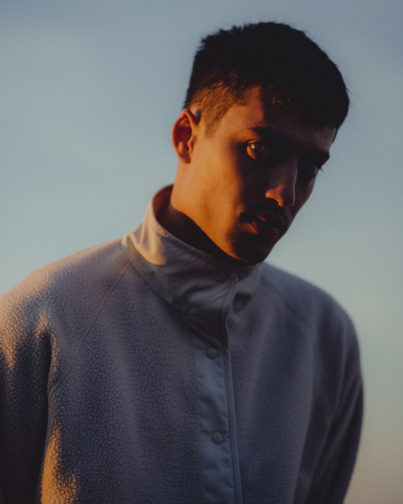
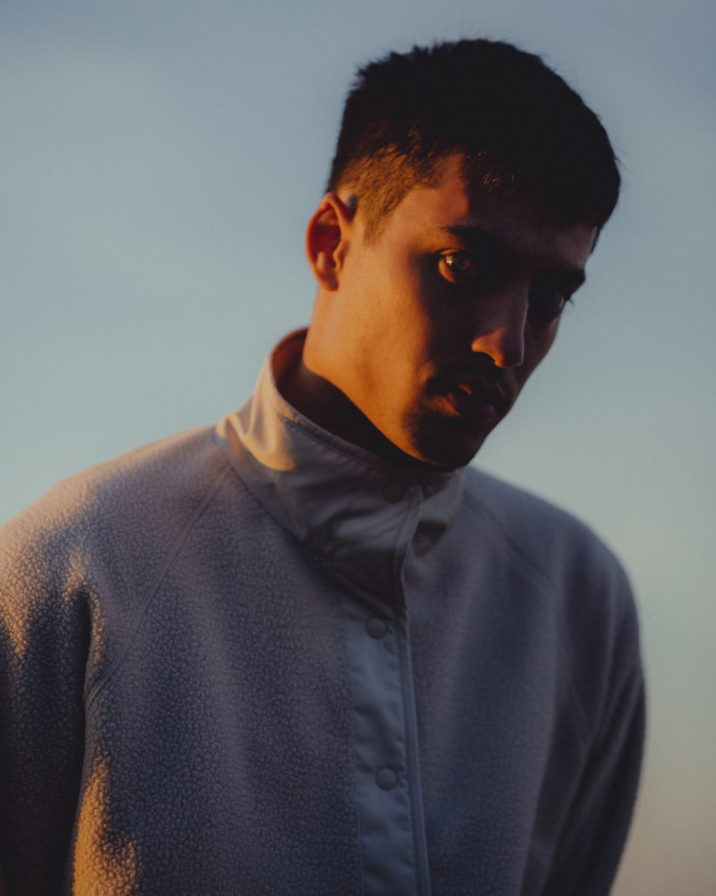

Joyrider
Each night before EDEN walks out on stage, the house music cuts and ‘Joyrider’ from the now defunct Irish group Burnt Out blares out the speakers. It’s a ritual he’s maintained since 2017 and with visits to his native Dublin increasingly fleeting and infrequent, it’s one of the ways he stays connected to his hometown. With that in mind, he’s intent to make the most of a rare opportunity to spend time in the capital. We’re in the midst of an August heatwave and Jonathon Ng or EDEN as he is better known to his listeners, is carrying a large suitcase in his arms down two flights of stairs in a Temple Bar office. He’s got 24 hours before he goes on a trip to Argentina. So squeezing in a visit to his favourite spots during our conversation is a must.
As the car is loaded he explains that after he passed his driving test, he made a habit of taking his parent’s purple Toyota Yaris out of town to the mountains of Ticknock. He’d burn CDs of carefully-curated compilations and park at the foot of the pathway to the peak. It became the place where he’d go to dream and decompress long before he was a touring musician. In the eight or so years since his music blew up and he moved to London, it’s remained an enduring feature of his flying visits home. Coincidently, the car we’re taking to visit the foothills is a similarly coloured Toyota.
In the last ten years, EDEN has proved one of Ireland’s biggest musical exports but also one of the greatest paradoxes. On the one hand, his streaming numbers dwarf his native contemporaries, he’s charted highly in the UK and America, and he threads the line between accessible and inventive in a way that has huge appeal. His subversion of pop expectations influenced a whole new school of trailblazers like Glaive and if you count Antarctica, it’s only one of two continents he hasn’t toured. He admits he’s lost count of how many ‘EDEN’ tattoos he’s been tagged in on Instagram and even has fans naming their children after his moniker. He’s also got a fan in LORDE, who professed her love for his song ‘Sex’ by posting on his Facebook wall.
However, there are music fans in his hometown that haven’t heard of him. Rapid success in the Soundcloud era meant he had already left for London without ingraining himself in the local music scene. Couple that with his mild distaste for social media and early preference for quasi-anonymous branding and he was a huge act ripe to be missed by journalists waiting for spoon-fed press releases. During his early success, if you weren’t tapped in, you wouldn’t know about him. Even as late as 2016, Nialler9 commented on his absence from Irish music media saying, “How does an Irish musician sell out venues in Dublin, LA, New York, San Fran, London and Toronto without as much of a peep back home?”
EDEN’s career could be characterised as an inseparable soup of competing ingredients. Nowadays, it’s possible to be both widely popular online and unknown to mainstream audiences. So in a way, EDEN is one of the early blueprints for alt-pop pin ups. Much like Odd Future were for DIY hip hop or Yung Lean for the half spaces between genres. The problem that comes with being an innovator is, you often don’t have contemporaries to emulate or mentors to guide you down an unfamiliar path.
The August heatwave means that once we are in the car we have the windows rolled down completely as we slalom between rush hour traffic. Jon explains from the backseat that success on his own terms still meant he was touring America before he really knew himself.
“The way it took off for me and, you know, whatever was going on really, really fucked with my head”, he says. “I became reclusive. Which is like the opposite of what you need as well…” EDEN’s End Credits EP drew massive industry attention. It was second only to Macklemore on popular music blog aggregator and de facto internet music chart Hype Machine during its 2015 release and it led to a flurry of calls and emails. ”I’d never spoken to a record label” he admits. “It just went nuts and I met with every label I’d ever heard of for like 10 weeks straight. I had cold calls, multiple meetings every day. People were flying in from London and America. I met so many people and that really fucked with my head, it was like a rude kind of introduction to the music industry… it just went from being this like little protective bubble of me and my friends on the internet, just doing whatever the fuck we wanted to being really intense”.
The way it took off for me and, you know, whatever was going on really, really fucked with my head. I became reclusive.
With that in mind, he makes the point that at that time, music was just a mode of expression. It was never the product of methodical attempts to make a hit. So when labels and A&Rs began forensically examining his songs and were urging him to make an album he wasn’t ready for, it tainted the magic of his process.
“I started overanalysing everything and I just got really uninspired. When I made End Credits I felt like, ‘this is the best shit in the world and like if no one listens to it, I don’t care because I know this is good’. And I just didn’t feel like that [with the next record]. The next thing I did was like a workaround. It did really well and that just made it feel even more fucking hollow”, he admits.
An Enforced Reset
The longer the discontent continued, the more Jon could identify with his contemporaries. “I used to watch these Deadmau5 live streams”, he explains. “He used the live streams to make music and talk to fans and shit. But he was just so miserable. Someone commented in the chat something along the lines of, ‘why are you still doing this?’ He was like ‘Well, I tried to ruin my career and it didn’t work’. And I literally felt that deeply for a couple of years.
“The music just became really, really insular. And like, to the point where I was sequencing I was making my first album Vertigo and I was like, ‘Oh, my god, there’s so many depressing songs in a row… It was like, kind of a ‘fuck you’. Almost making music that I wanted people to find it difficult to like… You kind of start testing the waters to see like, ‘how much can I get away with’ or ‘at what point is this all just gonna vanish?’ Yung Lean ended up doing way too much drugs and pushing glass shards into his skin because he didn’t think he existed anymore, whereas I just got really depressed and reclusive.”
On top of the industry pressure, large and interactive shows weren’t working for EDEN – They were an unnatural fit for someone who had grown up making vulnerable songs by himself in his bedroom. Admittedly, a lot of this pressure was coming from himself but when he was still finding his feet artistically, it was a difficult conundrum to reconcile.
“I started touring at 20. So from 20 to 24 was hell. You don’t even allow yourself to really comprehend or digest whatever is going on because you’re doing something that you’re supposed to love. You just completely belittle yourself like ‘I would have died to have been here so I can’t complain. It’s such an unhealthy way to operate. To think that, ‘Oh, this is really hurtful for me or this is really uncomfortable, I feel anxious, I feel whatever’. And to be like, ‘Oh, but other people would love this’. It’s just not a healthy way to deal with how you feel.”
 

Jon’s new album ICYMI is the product of an enforced reset. It contains heartbreak and grief but it’s not a sad album. In fact, the LP’s stand out quality is how he responds to life’s difficult moments. Take ‘Closer 2′ for example. The astral production propels his defiant affirmations, “Proud of my tears, proud to be alone. Proud of my highs, proud of my lows”. Elsewhere, his calm delivery in the midst of the pulsing synths stands strong like the world’s most resilient scarecrow in the middle of a tornado. It’s a record that reflects on hard times without getting too hung up on them.
This perspective shift was only made possible by developments that Jon explains between bites of a camera shutter at the brow of one of Ticknock’s hills. Firstly, he started enjoying performing again. His close friend passed away in 2019 and in response he committed to living life to the fullest. The final three shows before lockdown felt like a turning point for how he presented himself on stage and even though that experience was cut short and he had to return home to Dublin, he welcomed the involuntary pause as an opportunity to slow down for the first time since 2015. This period of calm facilitated an awareness of the feelings he hadn’t time to connect to previously. So when he began writing again, it all poured out.
I was sitting playing these chords over and over again and suddenly the words for that bridge and melody all came to me at the same time and I started balling my eyes out. I’d never cried from music like that in my life.
“I already knew the album title before any of the music really” he tells me. “I think the first thing I made when I got back to Dublin was ‘Call Me Back’. I made the drum beat on my modular synth and I was working on the chorus… I was sitting playing these chords over and over again and suddenly the words for that bridge and melody all came to me at the same time and I started balling my eyes out. I’d never cried from music like that in my life, man. So there’s a definite layer of excavating a bunch of stuff. I think it’s like looking at yourself and things that happened in a really honest way that you had maybe been avoiding for a long time. There is that thread throughout the album of really facing things head on in the light of day that you were maybe trying to escape from”.
The Slower Pace of Home

The result of this self-assessment was a renewed sense of clarity. Likewise, the slower pace of home carried through when he returned to London and Jon found himself cycling freely through the city and reliving his adolescence playing Call Of Duty online with his friends. It all seeped into his music too. The songs were more lucid and in a full circle moment, he sings about kill streak-inflicted weather conditions in ‘Modern Warfare’. Ultimately, he no longer felt the weight of the world on his shoulders and could begin to process the hurdles of the last ten years.
“I was just making music. I try and do it in a very free-associative way. I’m not there with designs, plans and schematics trying to engineer something. It’s just whatever comes out comes out.”, he explains. “I feel more like an archeologist than an architect. I’m uncovering shit rather than planning and building. There were a lot of false starts. There were two or three times where I thought I had the album and ended up scrapping it and starting again. By the time I was on the real version of the album, I was slowly learning about myself through what I’d made.”
This process culminated in a series of buoyant songs made up of co-existing memories, places and emotions from different eras of his life. In ‘A Call’, the opening spoken word piece of the album, Jon indiscriminately stitches together ambiguous stories from his childhood, teenage years and early twenties without a mention of which is which.
“It’s all these layers viewed top down in the same you look at a map. You don’t see the curvature, the peaks and troughs. It’s flattened. It’s a lot of these different times at the same time”, he explains. Likewise, ‘Balling’ is written from the perspective of 19 year old him but is littered with recent memories. It’s an emotive ode to people and experiences that are no longer with him. One that shares DNA with the falsetto’s of peak pop Brockhampton but not without its own distinctive glitchy motifs.
“I remember with ‘Balling‘ starting with the guitar chords, it’s crazy sometimes when you make music it can be three chords over and over again, but it just hit. It’s so dreamy and makes you think of when you were a kid, those late summer evenings. It’s august and summer is nearly over. You are love sick for the summer and it’s this weird bittersweet energy. It’s something I can never get enough of.”
In a final note before he departs, Jon details the dystopian worldview that persists throughout the visuals for ‘Balling’ and the rest of the album’s music videos. Inspired by Japanese anime Neon Genesis Evangelion, it’s not so much about decadent places and aesthetics as it is about the experience of living through seemingly hopeless times.
I was just making music. I try and do it in a very free-associative way. I’m not there with designs, plans and schematics trying to engineer something. I feel more like an archeologist than an architect. I’m uncovering shit rather than planning and building.
“The idea behind the visual side of this is like, very dystopian futurism that can be distilled down to a byline of ‘how do you play the game when you’ve not been dealt a hand at all?’ So like, you know, when everything’s like already destined to be fucked, what can you do? How do you react when there’s nothing you can do about that shit, how do you cope? How do you survive? What are the little joys that kind of thing?”
A day later, we catch up again over the phone. Jon is in the departure lounge ahead of a connecting flight from London to Argentina. After relocating a few times to get away from final calls for late passengers he clarifies some more details about the album and talks about a listening party he has planned in Los Angeles. When asked about what he is looking forward to most about Argentina, he doesn’t hesitate.
“Not being around. Just removing myself culturally. I brought a microphone and an interface and a synth so that if I have time and I feel like it, I’ll mess around. There’s something about leaving your general space of where you live and just doing nothing. I’ll go skiing, exercise and clear the head.”